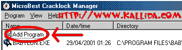
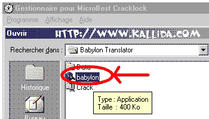
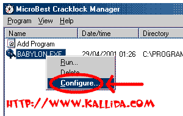
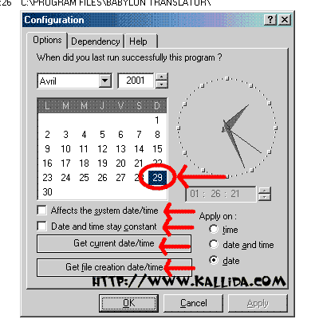
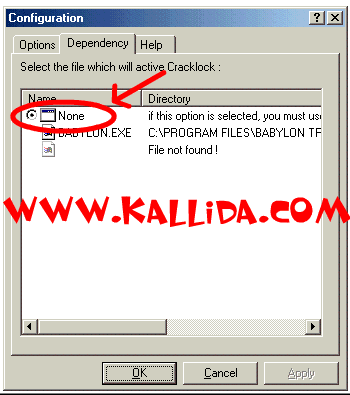

http://www.kallida.com/cracklock.html
ÔÑÍ ÈÑäÇãÌ Cracklock Manager áßÓÑ ÇáÒãä İí ÇáÈÑÇãÌ ÇáãÄŞÊÉ
ÈÓã Çááå ÇáÑÍãÇä ÇáÑÍíã
ÅÓã ÇáÈÑäÇãÌ : Cracklock Manager
ÑŞã ÇáÅÕÏÇÑÉ :3.8.1
ÈíÆÉ ÇáÚãá : (Windows 95/98/ME/NT (32 bits
ÍÌã ÇáÈÑäÇãÌ : 500 KB
ÇááÛÇÊ ÇáãÊæİÑÉ : ÇáÅäÌáíÒíÉ-ÇáİÑäÓíÉ-ÇáÅÓÈÇäíÉ- æ ÇáÂä ÇáÚÑÈíÉ
áÛÉ ÇáÈÑãÌÉ : Visual Basic 5.0
ÊŞÏíÑí ÇáÔÎÕí : 5/4
ãæÇŞÚ ÇáÊÍãíá :
http://william.famille-blum.org/software/cracklock/downloads/cklk388.zip
http://abomaged.virtualave.net/cklk381.zip
æÙíİÉ ÇáÈÑäÇãÌ :
ßÓÑ ÇáÊæŞíÊ ÇáÒãäí ááÈÑÇãÌ ÇáÊí ÊÊæŞİ Úä ÇáÚãá ÈÚÏ ãÏÉ
ãÚíäÉ (ÛÇáÈÇ 30 íæãÇ) ÍíË íŞæã ÈÅÚØÇÁåÇ ÊæŞíÊ ãÒíİ ÊÍÏÏå ÃäÊ
æ ÈĞáß ÊÚãá ãËá åĞå ÇáÈÑÇãÌ Úáì ÇáÏæÇã
ÔÑÍ ÇáÈÑäÇãÌ :
ÈÚÏ ÊËÈíË ÇáÈÑäÇãÌ Úáì ÌåÇÒß ÔÛá ÇáÈÑäÇãÌ Ëã ÅÖÛØ Add program

Óæİ ÊİÊÍ ÇáÇä äÇİĞÉ ,ÇÎÊÑ Çí ÈÑäÇãÌ ÊÑíÏå , İí åĞÇ ÇáãËÇá Óæİ ÃÎÊÇÑ
ÈÑäÇãÌ babylon translator

ÇÖÛØ ÈÇáÒÑ ÇáÃíãä Úáì ÇÓã ÇáÈÑäÇãÌ æ ÇÎÊÑ configure ...

Óæİ ÊÙåÑ ÔÇÔÉ ÃÎÑì åí ÇáÃåã ÍíË Êãßäß ãä ÅÎÊíÇÑ ÇáÊæŞíÊ ÇáÒãäí ÇáĞí
íãßä ááÈÑäÇãÌ ÇáÚãá İíå ÍíË íÈŞì ÇáÈÑäÇãÌ ãÍÊİÙÇ ÈäİÓ ÇáÊæŞíÊ ãÏì ÇáÍíÇÉ

ãËáÇ ÇäÇ ÓæíÊ setup áÈÑäÇãÌ babylon translator íæã 28/04/2001 Óæİ ÇÎÊÇÑ
ãä ÇáŞÇÆãÉ íæã 29/04/2001 ,íãßäß Ãä ÊÎÊÇÑ ÇáÓÇÚÉ Çæ ÇáËÇäíÉ ÍÊì :)
æ ÈÚÏ ãÑæÑ 100 ÚÇã ÍÊì Óæİ íÙä ÇáÈÑäÇãÌ Ãäå íæã 29/04/2001
åäÇß ÎíÇÑÇÊ ÅÖÇİíÉ :
Get Current date/time : ÅÎÊíÇÑ ÇáæŞÊ ÇáÍÇáí ááÌåÇÒ
Get File creation date/time :ÇÎÊíÇÑ ÇáÊÇÑíÎ ÇáĞí Êã İí ÅäÔÇÁ Ãæ ÊËÈíË ÇáÈÑäÇãÌ
ÎíÇÑÇÊ ãÊŞÏãÉ :
Affects system date and time : ÚäÏãÇ ÊÖÚ ÚáÇãÉ "ÕÍ" ÃãÇã åĞÇ ÇáÎíÇÑ İÅäß ÊÌÚá Úãá
ÇáÈÑäÇãÌ ÃßËÑ "ÈÏÇÆíÉ" İÚäÏãÇ ÊŞæã ÈÊÔÛíá ÇáÈÑäÇãÌ ÇáĞí ÍÏÏÊå áCracklock
íŞæã Cracklock ÈÊÛííÑ ÇáÊÇÑíÎ æ ÇáÓÇÚÉ İí ÇáßæãÈíæÊÑ ÊáŞÇÆíÇ ,æ ÈÚÏ ÅŞİÇá ÇáÈÑäÇãÌ íÚæÏ
ÇáÊÇÑíÎ Åáì ÇáÊÇÑíÎ ÇáÍŞíŞí ááßæãÈíæÊÑ
Date and time remain constant: åĞÇ ÇáÎíÇÑ ãÎÕÕ ááÈÑÇãÌ ÇáÊí áÇ ÊÚãá Óæì ÈÖÚ ÓÇÚÇÊ Ãæ ÈÖÚ ÏŞÇÆŞ :) æ ÈãÇ Ãä ãËá åĞå ÇáÈÑÇãÌ Şáíá’ ÌÏÇ ÌÏÇÇÇÇÇÇÇÇ İáä ÃÔÑÍ åĞÇ ÇáÎíÇÑ :(
ÇáÃä İí ÎÇäÉ Dependency ÅÎÊÑ None

ÇÖÛØ ok æ Êßæä ÈĞáß ŞÏ ÇäÊåíÊ
,ÇÓÊãÊÚ ÇáÇä ÈÇáÈÑÇãÌ ÈÏæä ÚŞÏÉ Çá"30 íæã" :) HAHAHA
ãáÇÍÙÇÊ :
-İí Cracklock, Windows NT áÇ íÓÊØíÚ ÊÛíÑ ãáİÇÊ ÇáäÙÇã ãËá MSVCRT.DLL
-ÅĞÇ ßÇäÊ áÏíß äÓÎÉ ŞÏíãÉ ãä ÇáÈÑäÇãÌ ÇÒáåÇ ŞÈá ÊËÈíË åĞå ÇáäÓÎÉ
- Cracklock áÇ íÓÊØíÚ ÇáÚãá Úáì ÈÑÇãÌ ãä äæÚ Windows 3.1)16 bits)
-ááãÒíÏ ãä ÇáãÚáæãÇÊ íãßäß ÒíÇÑÉ ãæŞÚ ãÕãã ÇáÈÑäÇãÌ æåæ ÈÇáãäÇÓÈÉ İÑäÓí
kallida@caramail.com
HTTP://WWW.KALLIDA.COM
ãÚ ÊÍíÇÊ ØÇÑŞ ãä ÇáãÛÑÈ 16 ÚÇãÇ
íãßäß ÅÑÓÇá ãáÇÍÙÇÊßã æ ÅÓÊİÓÇÑÇÊßã Úáì ÈÑíÏí ÇáÅáßÊÑæäí
with greeting of Tarik kallida 16 years from Morocco
Feel free if you want to send me a letter by the way of this program
but wrote the in arabic or in French language, because
I don't speak English !!